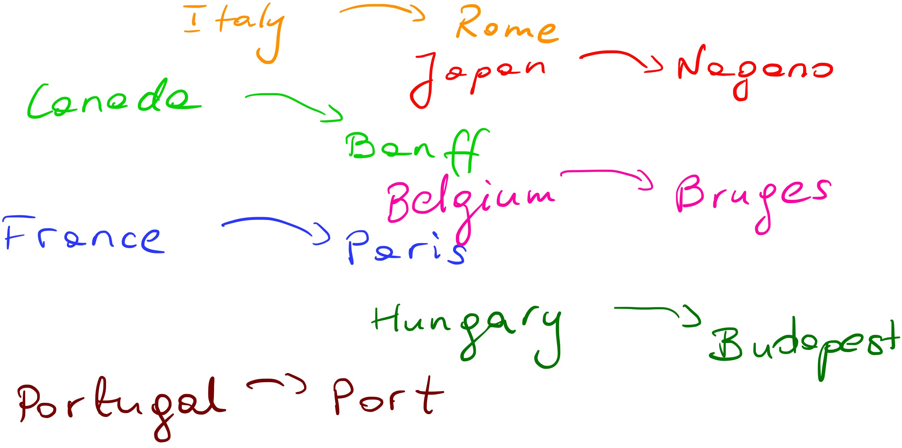
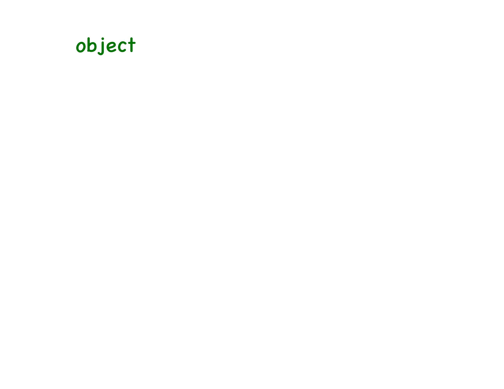
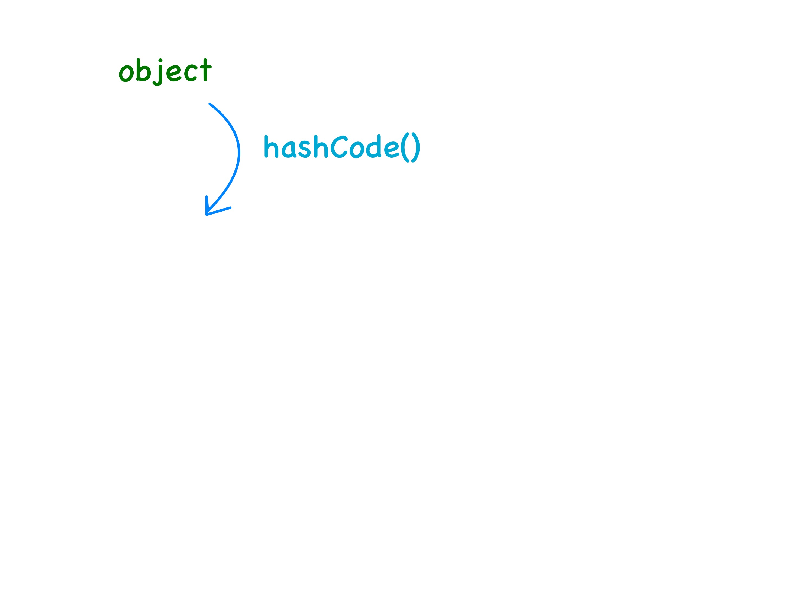
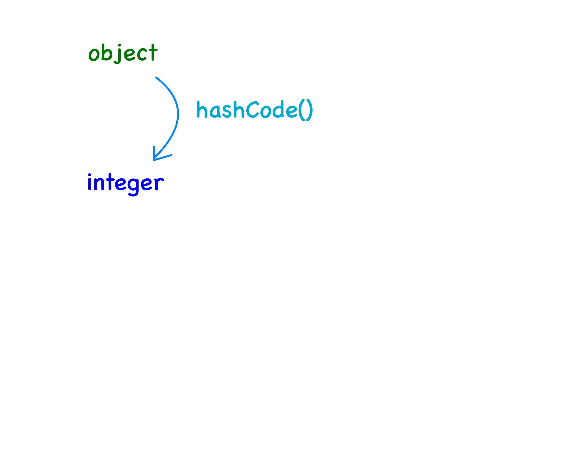
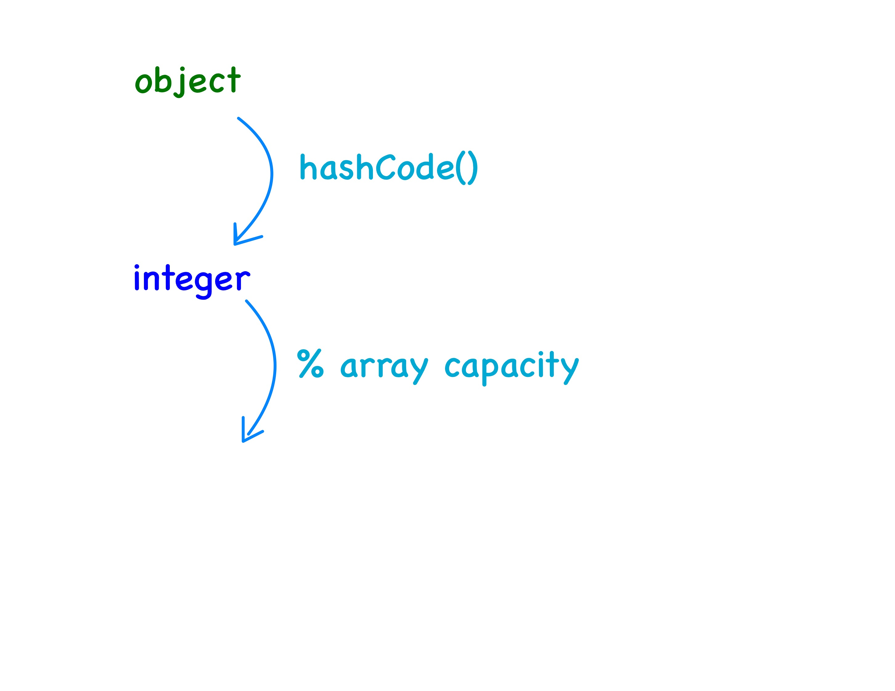
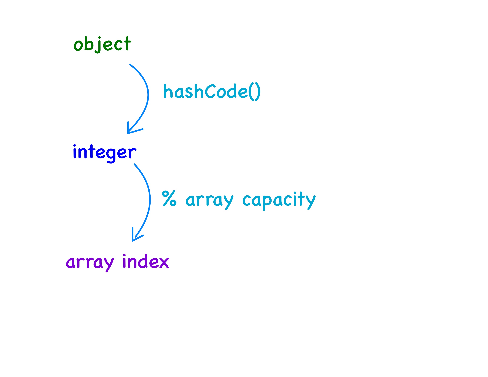

class: center, middle, title-slide # CSCI-UA 102 ## Data Structures <br> ## Hash Tables .author[ Instructor: Romain Cosson <br><br><br> ] .license[ Copyright 2020 Joanna Klukowska. Unless noted otherwise all content is released under a <br> [Creative Commons Attribution-ShareAlike 4.0 International License](https://creativecommons.org/licenses/by-sa/4.0/).<br> Background image by Stewart Weiss<br>] --- layout:true template: default name: section class: inverse, middle, center --- layout:true template: default name: breakout class: breakout, middle --- layout:true template:default name:slide class: slide .bottom-left[© J. Klukowska. (mod. R. C.) CC-BY-SA.] --- template: section # Dictionaries / Maps --- template: slide ## Why Dictionaries? - Many problems require us to store information as `(key, value)` pairs. -- - The `key` is what we search by, and the `value` is the associated information. -- - Examples: - country `->` capital - student ID `->` student record - word `->` number of occurrences -- - This abstract idea is called a **dictionary**, **map**, or **associative array**. --- ## Dictionary ADT - A dictionary stores pairs `(key, value)`. -- - Keys are **unique**: - each key maps to at most one value - inserting an existing key usually updates or replaces its old value -- - Typical operations: - `put(key, value)` - `get(key)` - `remove(key)` - `containsKey(key)` -- - This is an **abstract data type (ADT)** --- ## Dictionary Example Conceptually, a dictionary resembles an array: -- - we usually reference an element with index `i` of an array `A` by `A[i]` -- - with a dictionary `H`, we replace the numeric index by a meaningful key and use `H[key]` -- name: example - for example, if `H` contains the set of pairs .left-column2-small[ .smaller[ ``` {"Italy", "Rome"} {"Japan", "Nagano"} {"Canada", "Banff"} {"France", "Paris"} {"Belgium", "Bruges"} {"Hungary", "Budapest"} {"Portugal", "Porto"} ``` ]] .right-column2-large[ .center[ <p></p> ] ] - then - `print H["Italy"]` should print `Rome` - `print H["Portugal"]` should print `Porto`. --- template:section # Dictionaries in Java --- ## `Map<K,V>` Interface - Java provides a `Map` interface and several possible implementations of it. - https://docs.oracle.com/en/java/javase/17/docs/api/java.base/java/util/Map.html -- - `interface Map<K,V>` - __an object that maps keys of type `K` to values of type `V`__ -- - there main methods are: - __`V put(K key, V value)`__ associates the specified `value` with the specified `key` in this map; returns the previous value associated with `key`, or `null` if there was no mapping for `key` - __`V get(Object key)`__ returns the value to which the specified `key` is mapped, or `null` if this map contains no mapping for the `key` - __`V remove(Object key)`__ removes the mapping for a `key` from this map if it is present; returns the previous value associated with `key`, or `null` if there was no mapping for `key` - __`Set<K> keySet()`__ returns a `Set` view of the keys contained in this map --- ## `Set<E>` Interface - Java also provides a `Set` interface: - https://docs.oracle.com/en/java/javase/17/docs/api/java.base/java/util/Set.html -- - `interface Set<E>` - a `Set` stores elements with **no duplicates** - it is like keeping only the keys, with no associated values -- - Common operations: - `add(E element)` - `contains(E element)` - `remove(E element)` - iterate through the elements -- - Relationship to maps: - a dictionary stores `(key, value)` pairs where `keys` are unique - a set stores just `keys` that must be unique - `Map.keySet()` returns a `Set` because keys in a map are unique --- ## `HashMap<K,V>` vs `TreeMap<K,V>` .right-column2[ __`HashMap<K,V>`__ class - <a href="https://docs.oracle.com/en/java/javase/17/docs/api/java.base/java/util/HashMap.html" target="_blank">documentation</a> - `class HashMap<K,V> implements Map<K,V>` A **hash table implementation**. `keys` just need to implement (override) the `hashCode` method and the `equals` method. Complexity: O(1) time cost for add, get, and remove operations (assuming a good hash function and low number of collisions). Downside: does not maintain any order among keys. ] .left-column2[ __`TreeMap<K,V>`__ class - <a href="https://docs.oracle.com/en/java/javase/17/docs/api/java.base/java/util/TreeMap.html" target="_blank">documentation</a> - `class TreeMap<K,V> implements Map<K,V>` A Red-Black (or AVL) **tree based implementation**. The `keys` must be `comparable` (or a comparator is provided to the constructor). Complexity: O(log(n)) time cost for add, get, and remove operations. ] <div style="clear: both;"></div> .center[**The rest of this lecture will focus on the `HashMap` implementation, which is based on hash tables.**] --- template:section # Hash Tables --- ## Why Hash Tables? - Thought experiment: imagine that memory were an **infinite array**. -- - Every key can be written in binary, which can be converted into an integer. -- - We could use that integer as an array index. -- - Then dictionary operations would be conceptually simple: - `put(key, value)`: store the value at that index - `get(key)`: read the value at that index - `remove(key)`: clear the value at that index -- - This would give us direct access, essentially in O(1) time. -- - But the memory cost would be enormous: - most of the array would be empty -- - So there is a trade-off between **space** and **time** -- - A hash table is a practical compromise: it tries to keep access close to O(1) without requiring infinite space. --- name:hash-function ## What are Hash Tables? - A __hash table__ is a data structure that implements a dictionary / map. - It stores `(key, value)` pairs, usually in an array. - The `key` itself is not usually a valid array index. So we use a __hash function__ to transform the key into an integer index in the array. Basic idea: - start with a key - compute an index `i = hash(key)` - use position `i` in the array to store, retrieve, or remove the value -- .center[ <p></p> ] --- template:hash-function .center[ <p></p> ] --- template:hash-function .center[ <p></p> ] --- template:hash-function .center[ <p></p> ] --- template:hash-function .center[ <p></p> ] --- ## What are Hash Tables? __First example__ If the keys are integers and the hash table is an array of size 127, then the function `hash(key)`, defined by `hash(key) = key % 127` maps every integer key to one of the valid array indexes `0, 1, ..., 126`. -- For example: - `hash(10) = 10` - `hash(42) = 42` -- But also: - `hash(137) = 10` - `hash(264) = 10` -- This shows two important facts: - each key has exactly one hash value, but different keys may map to the same array location. - This is called a __collision__. -- **Handling collisions well is one of the main challenges in implementing hash tables.** --- template: section # Hash Function ## (or Java's `hashCode`) --- ## Properties of a Good Hash Function - Why can't we just use the key itself as a hash? Well, it might be - too big, - negative, or - not an integer. - __Properties of a good hash function__: _A hash function usually works by chopping up its argument and construct a value out of the chopped up little pieces. To be good, a hash function should have the following properties:__ - __easy to compute__ (for speed), - __repeatable__, and - __randomly disperse keys__ evenly throughout the table, making sure that no two keys map to the same index. - (in cryptography / security) make the original key **hard to reconstruct** from the computed hash value (e.g., blockchain). -- <br> - __The `hashCode()` and `equals()` Contract__ - If `a.equals(b)` is `true`, then `a.hashCode() == b.hashCode()` MUST be true. --- ## Good Hash Functions: `String` class - Java provides a method called `hashCode()` for all its classes that can be used as keys into hash tables (`String`, `Integer`, ...). - For example, the `hashCode()` method in the String class is implemented as follows: .smaller[ ```java /** * Returns a hash code for this string. The hash code for a String object is computed as * s[0]*31^(n-1) + s[1]*31^(n-2) + ... + s[n-1] * using integer arithmetic, where s[i] is the i'th character of the string, * n is the length of the string, and ^ indicates exponentiation. * (The hash value of the empty string is zero.) * @return a hash code value for this object. */ public int hashCode() { int h = hash; if (h == 0 && value.length > 0) { char val[] = value; for (int i = 0; i < value.length; i++) { h = 31 * h + val[i]; } hash = h; } return h; } ``` ] -- - `31` is a practical choice: it is a prime number, which helps avoid overly regular bit patterns. - the result is an `int`, so the hash is always a 32-bit signed integer (at most 2^31 - 1). If the computation exceeds the `int` range, Java just wraps around; this overflow is expected and is part of the hash computation --- ## Good Hash Functions: `Integer` class ```java /** * Returns a hash code for this {@code Integer}. * * @return a hash code value for this object, equal to the * primitive {@code int} value represented by this * {@code Integer} object. */ public int hashCode() { return value ; } ``` --- ## Good Hash Functions: `Double` class ```java /** * Returns a hash code for a double} value. * * @param value the value to hash * @return a hash code value for a {@code double} value. */ public static int hashCode(double value) { long bits = doubleToLongBits(value); return (int)(bits ^ (bits >>> 32)); } ``` -- - a `double` is stored using 64 bits, not 32 - Java first converts the floating-point value to its 64-bit bit pattern - then it combines the high 32 bits and low 32 bits with XOR to produce a single `int` hash code --- template: section # Collision Resolution --- ## Connection to the Birthday Paradox - A hash collision happens when **two different keys map to the same table index**. -- - This is similar to the **birthday paradox**: - in a group of people, we ask whether **two people share the same birthday** - in a hash table, we ask whether **two keys share the same hash location** -- - The surprising lesson from the birthday paradox is: > You do **not** need the table to be full before collisions become likely. -- - In fact, with: - `n` possible hash locations - about `sqrt{n}` inserted keys collisions already become reasonably likely. - So even a **large hash table** can start having collisions much earlier than we might expect. - **Experiment:** Ask students to pick a number between 1 and k^2/4 where k is the number of students. -- - Why is this the case? - The number of pairs of {1,...,k} is k(k-1)/2, which is about k^2/2. --- ## What happens when two things map to the same location? Two approaches to collision resolution: - __open addressing__ (also known as __closed hashing__) - finds an alternative location for the `(key, value)` pair, if the first location is occupied, - Linear probing - Quadratic probing - __closed addressing__ (also known as __open hashing__) - allows multiple `(key, value)` pairs to be stored in a single array location. - Separate chaining --- ## Linear Probing - If the hashed location is occupied, we try the next location. -- - If that one is occupied too, we keep moving one step at a time until we find an empty slot. --- name:example_linear ## Example: collisions with linear probing - key type `int`, value type is `String` - table size M = 5 - hash function `hash(key) = key % M ` --- template:example_linear ``` Index Table Content ********************* 0 null 1 null 2 null 3 null 4 null ``` --- template:example_linear ``` Index Table Content ********************* 0 null 1 [ 11 | "A" ] 2 null 3 null 4 null ``` - `put(11, "A")` - `hash(11) = 11 % 5 = 1` - collision: no - insert (11, "A") at index 1 --- template:example_linear ``` Index Table Content ********************* 0 null 1 [ 11 | "A" ] 2 [ 7 | "B" ] 3 null 4 null ``` - `put(7, "B")` - `hash(7) = 7 % 5 = 2` - collision: no - insert (7, "B") at index 2 --- template:example_linear ``` Index Table Content ********************* 0 null 1 [ 11 | "A" ] 2 [ 7 | "B" ] 3 [ 12 | "C" ] 4 null ``` - `put(12, "C")` - `hash(12) = 12 % 5 = 2` - collision: yes, index 2 has another key-value pair already - resolve collision: probe the next index (2+1), it's available - insert (12, "C") at index 3 --- template:example_linear ``` Index Table Content ********************* 0 null 1 [ 11 | "A" ] 2 [ 7 | "B" ] 3 [ 12 | "C" ] 4 [ 22 | "D" ] ``` - `put(22, "D")` - `hash(12) = 12 % 5 = 2` - collision: yes, index 2 has another key-value pair already - resolve collision: probe the next index (2+1), another collision - resolve second collision: probe the next index (2+2), it's available - insert (22, "D") at index 2 --- template:example_linear ``` Index Table Content ********************* 0 null 1 [ 11 | "A" ] 2 [ 7 | "B" ] 3 [ 12 | "C" ] 4 [ 22 | "D" ] ``` - If we now run `get(22)` - how many array locations need to be checked? - what value is returned? --- template:example_linear ``` Index Table Content ********************* 0 null 1 [ 11 | "A" ] 2 [ 7 | "B" ] 3 [ 12 | "C" ] 4 [ 22 | "D" ] ``` - If we now run `get(22)` - how many array locations need to be checked? __3 locations at index 2, 3, and 4__ - what value is returned? __D__ --- template:example_linear ``` Index Table Content ********************* 0 null 1 [ 11 | "A" ] 2 [ 7 | "B" ] 3 [ 12 | "C" ] 4 [ 22 | "D" ] ``` - If we now run `put(3,"E")` - how many collisions will occur? - what index would it be placed in? --- template:example_linear ``` Index Table Content ********************* 0 [ 3 | "C" ] 1 [ 11 | "A" ] 2 [ 7 | "B" ] 3 [ 12 | "C" ] 4 [ 22 | "D" ] ``` - If we now run `put(3,"E")` - how many collisions will occur? __2 since the hash(3) = 3 (first collision), then we check index 4 (another collision), and finally check index 0 (no collision)__ - what index would it be placed in? __index 0, since we wrap to the front of the array__ -- __Note 1: Linear probing tends to produce clusters.__ -- __Note 2: In practice, we do not want the table to be full as above.__ --- template:example_linear ``` Index Table Content ********************* 0 [ 3 | "C" ] 1 [ 11 | "A" ] 2 [ 7 | "B" ] 3 [ 12 | "C" ] 4 [ 22 | "D" ] ``` - Let's run `remove(12)` - how do we find where the value matching 12 is? -- - hash (12) = 12 % 5 = 2, but the key stored at index 2 is NOT 12 -- - check the next index, the key at index 3 is 12, so we remove it and return the value --- template:example_linear ``` Index Table Content ********************* 0 [ 3 | "C" ] 1 [ 11 | "A" ] 2 [ 7 | "B" ] 3 null //this was removed 4 [ 22 | "D" ] ``` - Let's run `remove(12)` - how do we find where the value matching 12 is? - hash (12) = 12 % 5 = 2, but the key stored at index 2 is NOT 12 - check the next index, the key at index 3 is 12, so we remove it and return the value --- template:example_linear ``` Index Table Content ********************* 0 [ 3 | "C" ] 1 [ 11 | "A" ] 2 [ 7 | "B" ] 3 null //this was removed 4 [ 22 | "D" ] ``` - Let's run `get(3)` - how do we find where the value matching 3 is? -- - hash (3) = 3 % 5 = 3, but index 3 is empty, so what's next ??? -- **When we use open addressing with collision resolution, we need to be able to keep track of indexes that _used to_ have values. The `get` and `remove` algorithms treat them as if they were occupied when searching for a key. ** --- template:example_linear ``` Index Table Content ********************* 0 [ 3 | "C" ] 1 [ 11 | "A" ] 2 [ 7 | "B" ] 3 null //this was removed 4 [ 22 | "D" ] ``` - Let's run `get(3)` - how do we find where the value matching 3 is? - hash (3) = 3 % 5 = 3, index 3 is empty, **but marked as removed** so we continue to index 4, and then index 0 where we find key = 3 and return string C --- ## Quadratic Probing - Quadratic probing is also an __open addressing__ method. -- - Instead of checking the next slot, it checks positions that are `1^2`, `2^2`, `3^2`, ... away from the original hashed location. -- - This can reduce clustering compared to linear probing. -- - But it may skip some locations, so insertion can fail to find an available slot even when the table is not full. --- name:example_quad ## Example: collisions with quadratic probing - key type `int`, value type is `String` - table size M = 5 - hash function `hash(key) = key % M ` - collision resolution: quadratic probing --- template:example_quad ``` Index Table Content ********************* 0 null 1 null 2 null 3 null 4 null ``` --- template:example_quad ``` Index Table Content ********************* 0 null 1 [ 11 | "A" ] 2 null 3 null 4 null ``` - `put(11, "A")` - `hash(11) = 11 % 5 = 1` - collision: no - insert (11, "A") at index 1 --- template:example_quad ``` Index Table Content ********************* 0 null 1 [ 11 | "A" ] 2 [ 7 | "B" ] 3 null 4 null ``` - `put(7, "B")` - `hash(7) = 7 % 5 = 2` - collision: no - insert (7, "B") at index 2 --- template:example_quad ``` Index Table Content ********************* 0 null 1 [ 11 | "A" ] 2 [ 7 | "B" ] 3 [ 12 | "C" ] 4 null ``` - `put(12, "C")` - `hash(12) = 12 % 5 = 2` - collision: yes, index 2 has another key-value pair already - resolve collision: probe the next index (2+1^2), it's available - insert (12, "C") at index 3 --- template:example_quad ``` Index Table Content ********************* 0 null 1 [ 11 | "A" ] 2 [ 7 | "B" ] 3 [ 12 | "C" ] 4 null ``` - `put(22, "D")` - `hash(12) = 12 % 5 = 2` - collision: yes, index 2 has another key-value pair already -- - resolve collision: probe the next index (2+1^2) = 3, another collision -- - resolve second collision: probe the next index (2+2^2) % 5 = 6 % 5 = 1, another collision -- - resolve collision: probe the next index (2+3^2) % 5 = 11 % 5 = 1, another collision -- - resolve second collision: probe the next index (2+4^2) % 5 = 18 % 5 = 3, another collision -- - resolve second collision: probe the next index (2+5^2) % 5 = 27 % 5 = 2, another collision -- - resolve second collision: probe the next index (2+6^2) % 5 = 38 % 5 = 3, another collision - insert (22, "D") at ??? --- template:example_quad ``` Index Table Content ********************* 0 null 1 [ 11 | "A" ] 2 [ 7 | "B" ] 3 [ 12 | "C" ] 4 null ``` <br/> <br/> **We cannot find a possible location for (22, "D") in this case!!!** - This is sometimes an issue with quadratic probing since it skips some possibly empty indexes. --- ## Separate Chaining - Separate chaining is a __closed addressing__ method. -- - Each array location stores a small collection of all pairs that hash to that index. -- - A common implementation uses a linked list, also called a __chain__ or __bucket__. -- - Java implementation detail: when a chain gets too long (default threshold is 8), Java turns that bucket into a balanced binary search tree, improving the worst-case search time from $O(N)$ to $O(\log N)$. --- name:example_seperate ## Example: collisions with separate chaining - key type `int`, value type is `String` - table size M = 5 - hash function `hash(key) = key % M ` - collision resolution: separate chaining (linked lists) --- template:example_seperate ``` Index Table Content ********************* 0 null 1 null 2 null 3 null 4 null ``` --- template:example_seperate ``` Index Table Content ********************* 0 null 1 [ 11 | "A" ] -> null 2 null 3 null 4 null ``` - `put(11, "A")` - `hash(11) = 11 % 5 = 1` - collision: no - insert (11, "A") at index 1 --- template:example_seperate ``` Index Table Content ********************* 0 null 1 [ 11 | "A" ] -> null 2 [ 7 | "B" ] -> null 3 null 4 null ``` - `put(7, "B")` - `hash(7) = 7 % 5 = 2` - collision: no - insert (7, "B") at index 2 --- template:example_seperate ``` Index Table Content ********************* 0 null 1 [ 11 | "A" ] -> null 2 [ 7 | "B" ] -> [ 12 | "C" ] -> null 3 null 4 null ``` - `put(12, "C")` - `hash(12) = 12 % 5 = 2` - collision: yes, index 2 has other key-value pairs already - insert (12, "C") at the end of the list at index 2 --- template:example_seperate ``` Index Table Content ********************* 0 null 1 [ 11 | "A" ] -> null 2 [ 7 | "B" ] -> [ 12 | "C" ] -> [ 22 | "D" ]-> null 3 null 4 null ``` - `put(22, "D")` - `hash(12) = 12 % 5 = 2` - collision: yes, index 2 has other key-value pairs already - insert (22, "D") at the end of the list at index 2 --- template:example_seperate ``` Index Table Content ********************* 0 null 1 [ 11 | "A" ] -> null 2 [ 7 | "B" ] -> [ 12 | "C" ] -> [ 22 | "D" ]-> null 3 null 4 null ``` - If we now run `get(22)` - how many comparisons need to be made? - what value is returned? --- template:example_seperate ``` Index Table Content ********************* 0 null 1 [ 11 | "A" ] -> null 2 [ 7 | "B" ] -> [ 12 | "C" ] -> [ 22 | "D" ]-> null 3 null 4 null ``` - If we now run `get(22)` - how many comparisons need to be made? __3, once we find that 22 is in the chain at index 3, we need to compare 22 to keys of the other key-value pairs: 7, 12 and finally 22__ - what value is returned? __D__ --- template: section # Rehashing --- ## Growing the size of the table - To guarantee good performance, the __load factor__ (defined as number of elements divided by the size of the array) should be less than 1 (often it is expected to be below 0.75) $$\text{load factor} = \dfrac{\text{number of elements}}{\text{capacity of the table}}$$ -- - When array becomes _too full_ (i.e. the load factor exceeds some predefined threshold), **all** the values stored in the table need to be __rehashed__ to a larger table. This is O(N) operation! --- ### Example Consider a table of size 7 and integer keys (values not shown): ``` 0 1 2 3 4 5 6 ------------------------------------ | 21 | 15 | | 38 | | 12 | 76 | ------------------------------------ ``` $\text{load factor} = \frac{5}{7} = 0.714 $ -- `put(16)` - results in $\text{load factor} = \frac{6}{7} = 0.857$ and we need to rehash. -- Let's say that the hash table grows by the rule of $2\times \text{current_size} + 1$ , then a new table will have size 15, and all the existing values need to be _rehashed_ to new locations - 21 % 15 = 6 - 15 % 15 = 0 - 38 % 15 = 8 - 12 % 15 = 12 - 76 % 15 = 1 -- ``` 0 1 2 3 4 5 6 7 8 9 10 11 12 13 14 ---------------------------------------------------------------------------- | 15 | 76 | | | | | 21 | | 38 | | | | 12 | | | ---------------------------------------------------------------------------- ``` -- - 16 % 15 = 1 results in a collision and the actual location will depend on the collision resolution method. --- template: slide ## Why Is Hashing Important in Security? - In **hash tables**, hashing is used for fast lookup. - In **security**, hashing has a different goal: - compute a short **fingerprint** of data - make it hard to reconstruct the original input - make it hard to find two different inputs with the same hash -- - Common security uses: - **password storage**: store a hash of the password, not the password itself - **file integrity**: verify that a download was not modified - **proof of work**: in blockchain, prove that you have done a certain amount of computational work by finding an input that hashes to a value with certain properties (e.g., starts with a certain number of zeros) -- - **Concrete example: P2P systems (like BitTorrent)** - files are split into pieces - each piece has a hash - when a piece is downloaded from peers, its hash is recomputed - if the hash does not match, the piece was corrupted or tampered with and is rejected -- - Conclusion: **Hash tables use hashing for efficiency; security uses hashing for integrity and verification.** </optgroup>